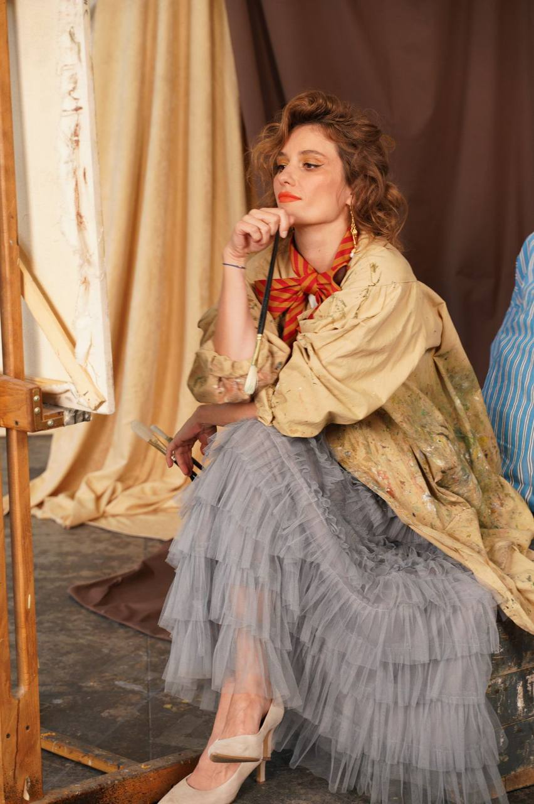

Картины
Екатерина Лямуан
Родилась в Москве, окончила художественную школу. В 2008 году поступила в Московское академическое художественное училище памяти 1905 года. К театру её подтолкнул наставник Игорь Шумилов — но набора на театральное отделение в тот год не было, и она пошла на педагогическое.
В конце обучения вместе с однокурсником Артёмом Дживаняном открыла галерею «Подполье» — проект объединил девятнадцать молодых московских художников.
В 2014 году поступила в Театральную мастерскую МГАХИ. Во время учёбы работала над «Носом» Шостаковича, «Пиковой дамой» Чайковского, «Добрым человеком из Сычуаня» Брехта. Там же научилась делать макеты и находить пластическое решение для литературных образов, заняла первое место в конкурсе живописных постановок. Французская тема с тех пор занимает заметное место в её работах.
Первая персональная выставка прошла в 2020 году в Культурном центре на Патриарших. В 2023 Екатерина впервые выступила художником-постановщиком — в опере «Кощей Бессмертный». В 2025 году в Гостином Дворе прошла масштабная выставка «Подслушано у картин» в тандеме с Татьяной Анже, по её мотивам вышла одноимённая книга. В июле 2026 — персональная выставка в Серпуховском историко-художественном музее.
- Член Московского Союза Художников с 2024 года
- Преподаёт сценографию в МГАХИ имени В. И. Сурикова
- Работы в частных коллекциях России, Франции и Испании
Работы в зале
Всё, что висит у нас на стенах, — оригиналы, написанные маслом. Любую работу можно приобрести: напишите или позвоните нам.